POL51
University of California, Davis
September 30, 2024
Controlling for confounds
Intuition
Limitations
Want to estimate the effect of X on Y
Elemental confounds get in our way
DAGs + ggdag() to model causal process
figure out which variables to control for and which to avoid
Remember, we have strong reason to believe the South is confounding the relationship between Waffle Houses and divorce rates:
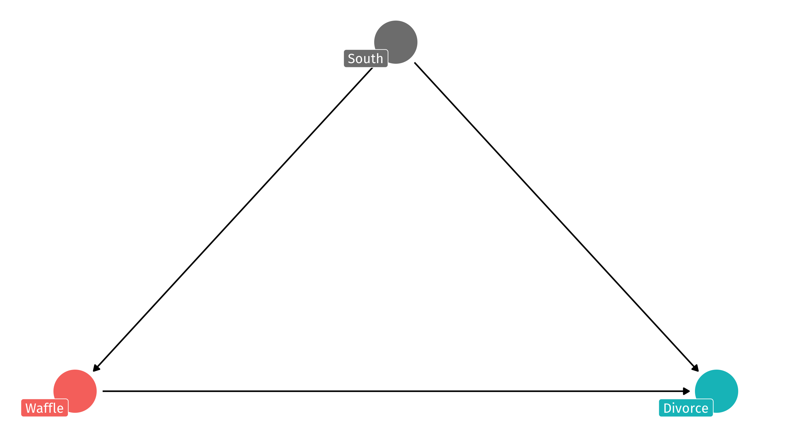We need to control (for) the South
It has a bad influence on divorce, waffle house locations, and the integrity of the union
But how do we do control (for) the South? And what does that even mean?
One way to adjust/control for backdoor paths is with multiple regression:
In general: \(Y = \alpha + \beta_1X_1 + \beta_2X_2 + \dots\)
In this case: \(Y = \alpha + \beta_1Waffles + \beta_2South\)
In multiple regression, coefficients (\(\beta_i\)) are different: they describe the relationship between X1 and Y, after adjusting for the X2, X3, X4, etc.
\(Y = \alpha + \beta_1Waffles + \beta_2South\)
Three ways of thinking about \(\color{red}{\beta_1}\) here:
The relationship between Waffles and Divorce, controlling for the South
The relationship between Waffles and Divorce that cannot be explained by the South
The relationship between Waffles and Divorce, comparing among similar states (South vs. South, North vs. North)
Let’s fit two models of the effect of GDP on life expectancy, one with controls and one without:
Population and year might be forks here: they affect both economic activity and life expectancy
Note
I’ve re-scaled gdp (10,000s) and population (millions)
We can compare models using a regression table;
many different functions, we’ll use huxreg() from the huxtable package
| No controls | With controls | |
| (Intercept) | 53.956 *** | -411.450 *** |
| (0.315) | (27.666) | |
| gdpPercap | 7.649 *** | 6.729 *** |
| (0.258) | (0.244) | |
| pop | 0.006 ** | |
| (0.002) | ||
| year | 0.235 *** | |
| (0.014) | ||
| N | 1704 | 1704 |
| R2 | 0.341 | 0.440 |
| logLik | -6422.205 | -6282.869 |
| AIC | 12850.409 | 12575.737 |
| *** p < 0.001; ** p < 0.01; * p < 0.05. | ||
Model 1 has no controls: just the relationship between GDP and life expectancy
Model 2 controls/adjusts for: population and year
the effect of GDP per capita on life expectancy changes with controls
The estimate is smaller
| No controls | With controls | |
| (Intercept) | 53.956 *** | -411.450 *** |
| (0.315) | (27.666) | |
| gdpPercap | 7.649 *** | 6.729 *** |
| (0.258) | (0.244) | |
| pop | 0.006 ** | |
| (0.002) | ||
| year | 0.235 *** | |
| (0.014) | ||
| N | 1704 | 1704 |
| R2 | 0.341 | 0.440 |
| logLik | -6422.205 | -6282.869 |
| AIC | 12850.409 | 12575.737 |
| *** p < 0.001; ** p < 0.01; * p < 0.05. | ||
No controls: every additional 10k of GDP = 7.6 years more life expectancy
With controls: after adjusting for population and year, every additional 10k of GDP = 6.7 years more of life expectancy
| No controls | With controls | |
| (Intercept) | 53.956 *** | -411.450 *** |
| (0.315) | (27.666) | |
| gdpPercap | 7.649 *** | 6.729 *** |
| (0.258) | (0.244) | |
| pop | 0.006 ** | |
| (0.002) | ||
| year | 0.235 *** | |
| (0.014) | ||
| nobs | 1704 | 1704 |
| *** p < 0.001; ** p < 0.01; * p < 0.05. | ||
In other words: .shout[comparing countries with similar population levels and in the same year], every additional 10k of GDP = 6.7 years more of life expectancy
How much does having an additional bathroom boost a house’s value?
| price | bedrooms | bathrooms | sqft_living | waterfront |
|---|---|---|---|---|
| 379900 | 3 | 2 | 3110 | FALSE |
| 998000 | 4 | 2 | 2910 | FALSE |
| 530000 | 2 | 2 | 1785 | FALSE |
| 530000 | 3 | 2 | 2030 | FALSE |
| 396000 | 3 | 2 | 2340 | FALSE |
| 348000 | 2 | 2 | 1270 | FALSE |
| 452000 | 2 | 2 | 1740 | FALSE |
| 201000 | 3 | 1 | 900 | FALSE |
A huge effect:
We are comparing houses with more and fewer bathrooms. But houses with more bathrooms tend to be larger! So house size is confounding the relationship between 🚽 and 💰
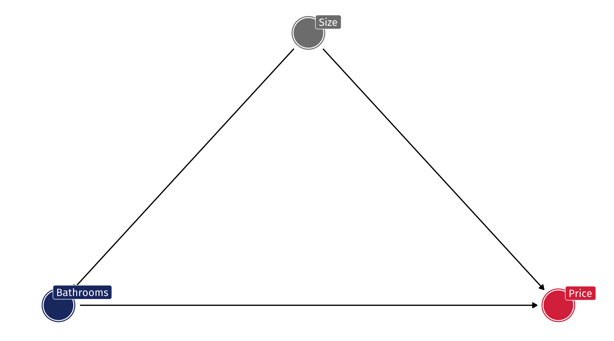What happens if we control for how large a house is?
controls = lm(price ~ bathrooms + sqft_living, data = house_prices)
huxreg("No controls" = no_controls, "Controls" = controls)| No controls | Controls | |
| (Intercept) | 10708.309 | -39456.614 *** |
| (6210.669) | (5223.129) | |
| bathrooms | 250326.516 *** | -5164.600 |
| (2759.528) | (3519.452) | |
| sqft_living | 283.892 *** | |
| (2.951) | ||
| N | 21613 | 21613 |
| R2 | 0.276 | 0.493 |
| logLik | -304117.741 | -300266.206 |
| AIC | 608241.481 | 600540.413 |
| *** p < 0.001; ** p < 0.01; * p < 0.05. | ||
These are examples with real data, where we can’t know for sure if our controls are doing what we think
Only way to know for sure is with made-up data, where we know the effects ex ante:
We know that waffles have 0 effect on divorce
We know that the south has an effect of 10 on divorce
We know that the south has an effect of 8 on waffles
Fit a naive model without controls, and the correct one controlling for the South:
Perfect! Naive model is confounded; but controlling for the South, we get pretty close to the truth (0 effect)
| Naive model | Control South | |
| (Intercept) | 7.479 *** | 15.774 *** |
| (1.671) | (1.787) | |
| waffle | 0.648 *** | 0.191 * |
| (0.064) | (0.086) | |
| south | 6.285 *** | |
| (0.980) | ||
| nobs | 50 | 50 |
| *** p < 0.001; ** p < 0.01; * p < 0.05. | ||
In our made-up world, if we control for the South we can get back the uncounfounded estimate of Divorce ~ Waffles
But what’s lm() doing under-the-hood that makes this possible?
lm() is estimating \(South \rightarrow Divorce\) and \(South \rightarrow Waffles\)
it is then subtracting out or removing the effect of South on Divorce and Waffles
what’s left is the relationship between Waffles and Divorce, adjusting for the influence of the South on each
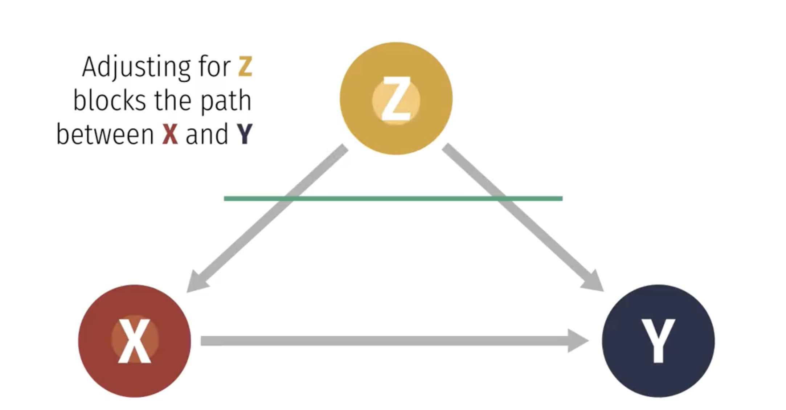
This is the confounded relationship between waffles and divorce (zoomed out)
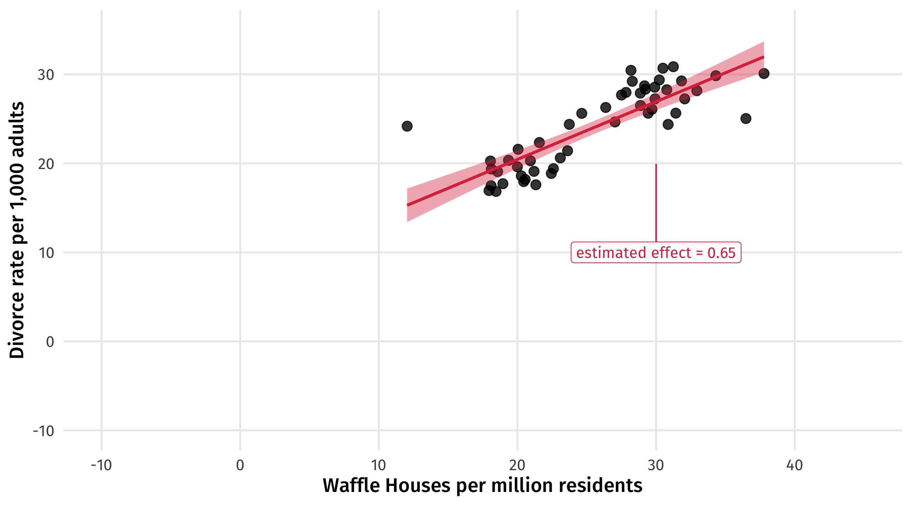We can see what we already know: states in the South tend to have more divorce, and more waffles
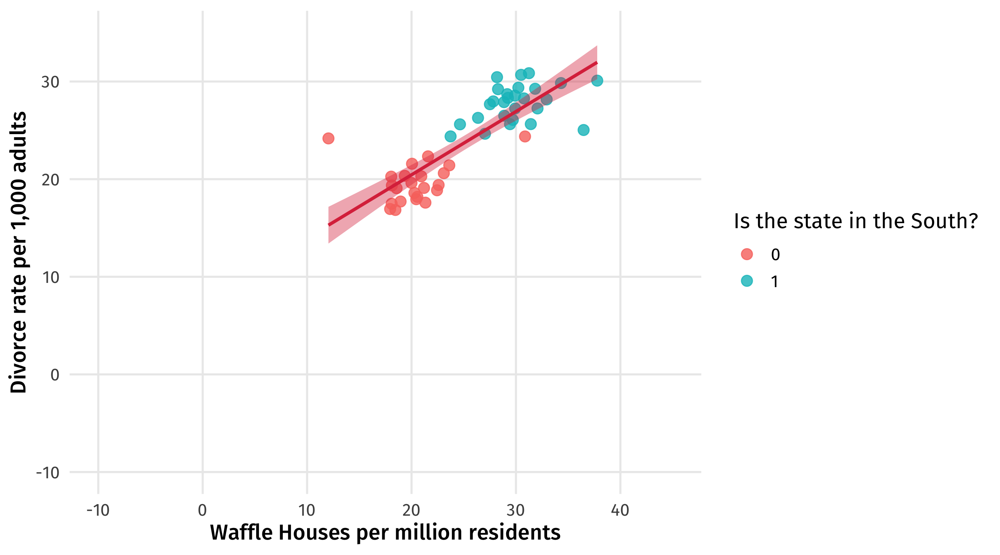\(South \rightarrow Divorce = 10\) How much higher, on average, divorce is in the South than the North
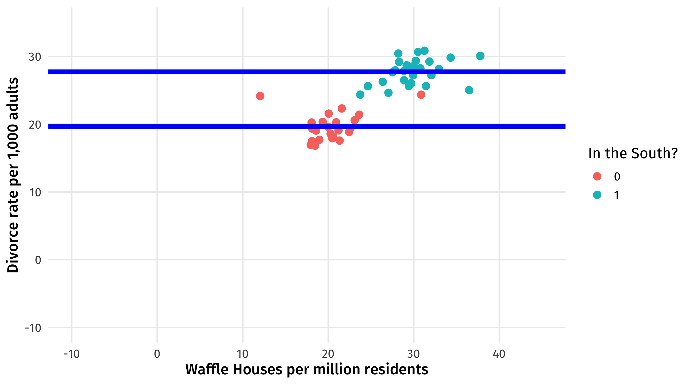Regression subtracts out the effect of the South on divorce
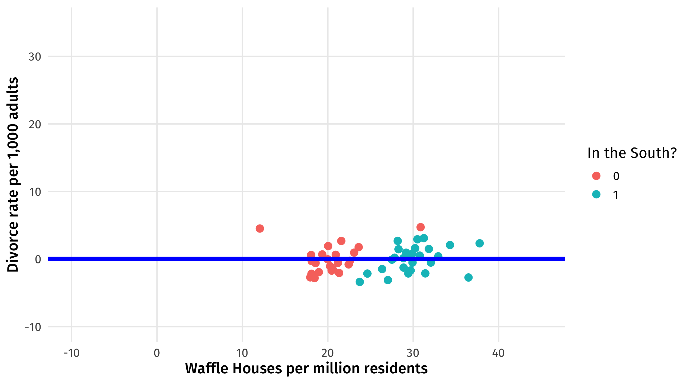\(South \rightarrow Waffles = 8\) How many more, on average, Waffle Houses there are in the South than the North
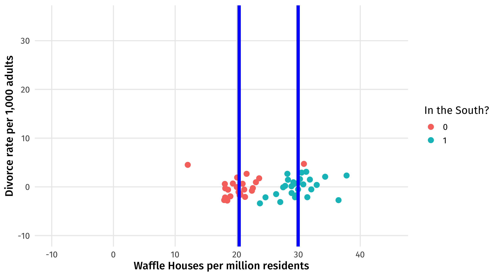Regression subtracts out the effect of the South on waffles
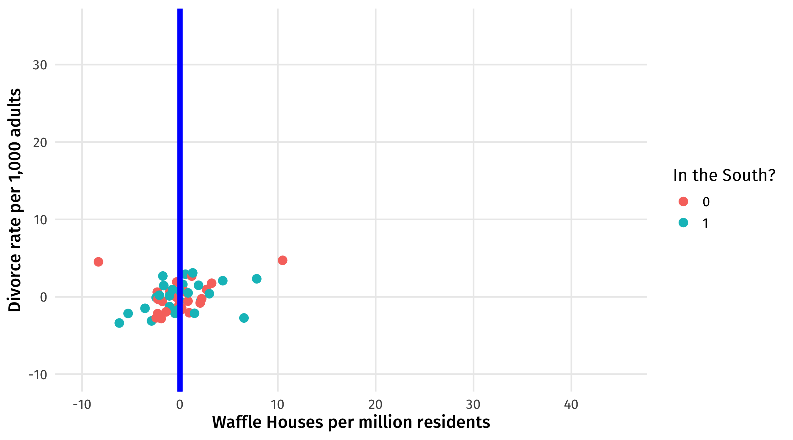The true effect of waffles on divorce \(\approx\) 0
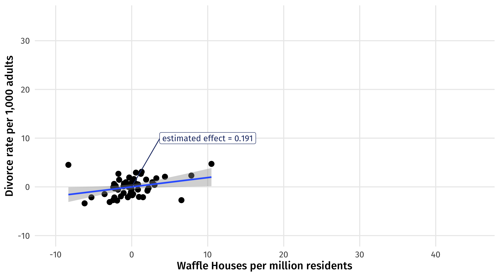Remember, with a perplexing pipe, controlling for Z blocks the effect of X on Y:
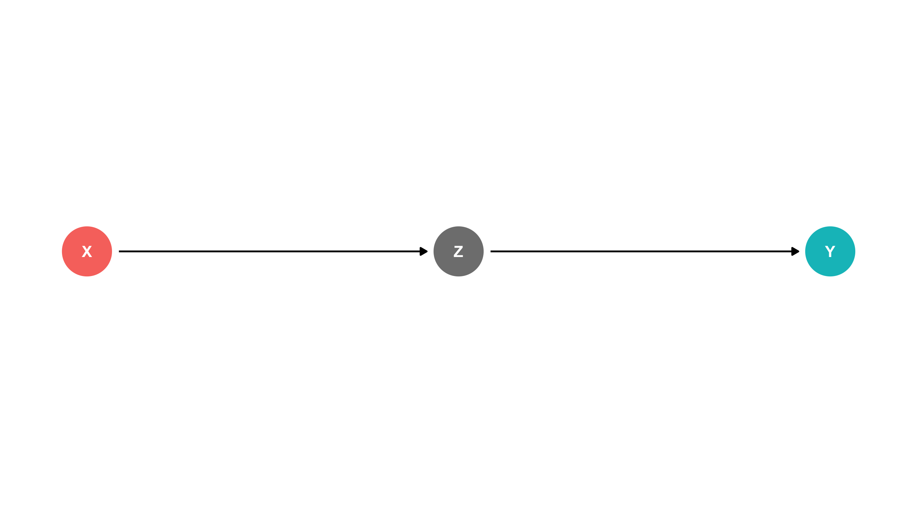Let’s make up some data to show this: every unit of foreign aid increases corruption by 8; every unit of corruption increases the number of protest by 4
What is the true effect of aid on protest? Tricky since the effect runs through corruption
For every unit of aid, corruption increases by 8; and for every unit of corruption, protest increases by 4…
The effect of aid on protest is \(4 \times 8 = 32\)
| aid | corruption | protest |
|---|---|---|
| 9.23 | 82.95 | 342.13 |
| 7.18 | 65.69 | 275.31 |
| 9.59 | 84.85 | 349.96 |
| 9.37 | 84.27 | 346.49 |
| 9.81 | 89.66 | 368.28 |
| 8.97 | 80.65 | 332.55 |
Remember, with a pipe controlling for Z (corruption) is a bad idea
Let’s fit two models, where one makes the mistake of controlling for corruption
Notice how the model that mistakenly controls for Z tells you that X basically has no effect on Y (wrong)
| Correct model | Bad control | |
| (Intercept) | 49.803 *** | 9.783 *** |
| (3.122) | (0.901) | |
| aid | 31.970 *** | -0.817 |
| (0.312) | (0.507) | |
| corruption | 4.094 *** | |
| (0.063) | ||
| nobs | 200 | 200 |
| *** p < 0.001; ** p < 0.01; * p < 0.05. | ||
Remember, with an exploding collider, controlling for M creates strange correlations between X and Y:
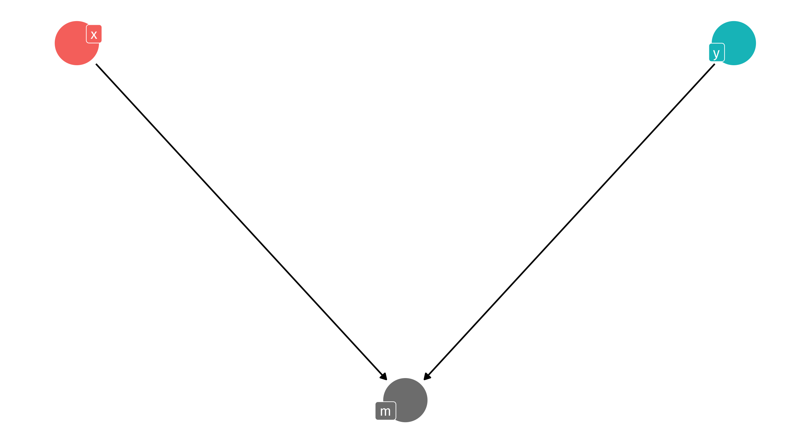Let’s make up some data to show this:
X has an effect of 8 on M
Y has an effect of 4 on M
X has no effect on Y
| x | y | m |
|---|---|---|
| 9.094432 | 8.115710 | 114.9313 |
| 10.043012 | 10.645053 | 133.7738 |
| 10.225254 | 10.171595 | 131.9025 |
| 9.454381 | 10.527610 | 128.8469 |
| 10.024405 | 11.665213 | 135.4701 |
| 9.594685 | 9.837076 | 126.1522 |
What’s the true effect of X on Y? it’s zero
Remember, with a collider controlling for M is a bad idea
Let’s fit two models, where one makes the mistake of controlling for M
Notice how the model that mistakenly controls for M tells you that X has a strong, negative effect on Y (wrong)
| Correct model | Collided! | |
| (Intercept) | 8.697 *** | -1.331 *** |
| (0.989) | (0.356) | |
| x | 0.138 | -1.957 *** |
| (0.099) | (0.059) | |
| m | 0.238 *** | |
| (0.006) | ||
| nobs | 100 | 100 |
| *** p < 0.001; ** p < 0.01; * p < 0.05. | ||
Most of the time when we see a collider, it’s because we’re looking at a weird sample of the population we’re interested in
Examples: the non-relationship between height and scoring, among NBA players; the (alleged) negative correlation between how surprising and reliable findings are, among published research
Imagine Google wants to hire the best of the best, and they have two criteria: interpersonal skills, and technical skills
Say Google can measure how socially and technically skilled someone is (0-100)
The two are causally unrelated: one does not affect the other; improving someone’s social skills would not hurt their technical skills
| social_skills | tech_skills |
|---|---|
| 37.87 | 38.46 |
| 27.31 | 54.83 |
| 56.66 | 52.63 |
| 43.63 | 32.23 |
| 48.43 | 42.49 |
| 44.41 | 47.49 |
| 44.91 | 25.93 |
| 42.47 | 22.64 |
Now imagine that they add up the two skills to see a person’s overall quality:
| social_skills | tech_skills | total_score |
| 54.2 | 53.6 | 108 |
| 61.5 | 39.6 | 101 |
| 55.1 | 59.8 | 115 |
| 67.3 | 49.3 | 117 |
| 57.9 | 58.6 | 116 |
| 45.7 | 36.2 | 81.9 |
| 36.8 | 69.5 | 106 |
| 40.1 | 33.1 | 73.2 |
| 52.6 | 47.4 | 100 |
| 59 | 46.4 | 105 |
| 46 | 47 | 93.1 |
| 47.5 | 39.3 | 86.8 |
| 26.8 | 55.3 | 82 |
| 53.2 | 60 | 113 |
| 56.7 | 52.6 | 109 |
| 41.8 | 59.5 | 101 |
| 44.7 | 38.5 | 83.1 |
| 58 | 50 | 108 |
| 46.5 | 50.8 | 97.3 |
| 41.4 | 42.8 | 84.2 |
| 46.2 | 44.2 | 90.4 |
| 55.8 | 53.4 | 109 |
| 39.6 | 38.6 | 78.2 |
| 48.1 | 45.6 | 93.7 |
| 52.4 | 48.2 | 101 |
| 54.5 | 50.9 | 105 |
| 53.2 | 46.4 | 99.6 |
| 56.1 | 43 | 99.1 |
| 53.1 | 59.2 | 112 |
| 63.9 | 50.4 | 114 |
| 34.6 | 47.8 | 82.3 |
| 40.6 | 44.4 | 85 |
| 52.6 | 37.2 | 89.7 |
| 63.4 | 49.2 | 113 |
| 35.4 | 47.7 | 83.2 |
| 55.7 | 26.6 | 82.3 |
| 47.7 | 42.5 | 90.2 |
| 29.6 | 52.8 | 82.4 |
| 56.2 | 57.3 | 114 |
| 58.9 | 57.1 | 116 |
| 51.4 | 40 | 91.4 |
| 40.5 | 48.6 | 89.1 |
| 40.5 | 64.9 | 105 |
| 34.3 | 52.5 | 86.8 |
| 50.1 | 36.3 | 86.4 |
| 35.2 | 78 | 113 |
| 42.7 | 68.4 | 111 |
| 53.7 | 59.8 | 113 |
| 64.4 | 48.1 | 113 |
| 63.9 | 39.8 | 104 |
| 43.1 | 43.7 | 86.8 |
| 37.9 | 38.5 | 76.3 |
| 45.8 | 58 | 104 |
| 58.9 | 43.2 | 102 |
| 50.2 | 59.4 | 110 |
| 55.6 | 51.9 | 108 |
| 43.5 | 54.5 | 98 |
| 52.6 | 41.1 | 93.7 |
| 31.1 | 38.4 | 69.5 |
| 48.8 | 58.3 | 107 |
| 41.6 | 45.2 | 86.8 |
| 51.5 | 34.1 | 85.5 |
| 69.6 | 62.2 | 132 |
| 38.4 | 66.4 | 105 |
| 43.9 | 51.3 | 95.2 |
| 64.3 | 56.8 | 121 |
| 53 | 58.6 | 112 |
| 51.7 | 38.4 | 90.1 |
| 49.7 | 54.8 | 104 |
| 52.2 | 54.9 | 107 |
| 47.2 | 43.5 | 90.7 |
| 57 | 55.4 | 112 |
| 50.9 | 38.7 | 89.6 |
| 49.9 | 34.9 | 84.8 |
| 49 | 55.6 | 105 |
| 30.8 | 53.1 | 83.9 |
| 63.4 | 62 | 125 |
| 48.5 | 52.6 | 101 |
| 42.5 | 47.8 | 90.4 |
| 57.5 | 64.3 | 122 |
| 51.7 | 45.8 | 97.6 |
| 62.9 | 64.2 | 127 |
| 54.8 | 52.1 | 107 |
| 53.5 | 68.6 | 122 |
| 63.4 | 48.8 | 112 |
| 66.4 | 57.2 | 124 |
| 49.7 | 52.6 | 102 |
| 35.2 | 53.4 | 88.6 |
| 49.3 | 56.6 | 106 |
| 40.4 | 34.2 | 74.6 |
| 48.8 | 41.8 | 90.6 |
| 46 | 53.1 | 99.1 |
| 43.4 | 62 | 105 |
| 59.7 | 56.2 | 116 |
| 52.6 | 56 | 109 |
| 37 | 70.6 | 108 |
| 29.9 | 46.9 | 76.8 |
| 45.3 | 47 | 92.3 |
| 46.9 | 44.2 | 91.1 |
| 46.1 | 45.9 | 92 |
| 56.1 | 42.6 | 98.7 |
| 62.3 | 43.8 | 106 |
| 44.6 | 35.6 | 80.2 |
| 44.9 | 25.9 | 70.8 |
| 56.2 | 43.9 | 100 |
| 43.6 | 32.2 | 75.9 |
| 49.7 | 56.1 | 106 |
| 60.8 | 53.7 | 115 |
| 54.1 | 46.8 | 101 |
| 59.2 | 57.2 | 116 |
| 52 | 54 | 106 |
| 61.2 | 51.7 | 113 |
| 35.5 | 48.1 | 83.6 |
| 61.7 | 57.7 | 119 |
| 51.8 | 40.3 | 92.1 |
| 42 | 26.6 | 68.6 |
| 44.4 | 47.5 | 91.9 |
| 43.1 | 49.7 | 92.7 |
| 43.4 | 56.8 | 100 |
| 48.3 | 59.5 | 108 |
| 42.6 | 42.8 | 85.4 |
| 49.8 | 51.9 | 102 |
| 56 | 39.6 | 95.5 |
| 48.6 | 53.1 | 102 |
| 63.5 | 36.8 | 100 |
| 62.9 | 26.1 | 89 |
| 52.6 | 41.5 | 94.1 |
| 27.3 | 54.8 | 82.1 |
| 37.8 | 48.5 | 86.3 |
| 43.8 | 48 | 91.8 |
| 58.8 | 47.1 | 106 |
| 36.1 | 46.3 | 82.4 |
| 59.6 | 58.9 | 118 |
| 63.1 | 37.9 | 101 |
| 54.4 | 65.4 | 120 |
| 62 | 46 | 108 |
| 43.5 | 39.6 | 83.1 |
| 42.3 | 58.6 | 101 |
| 41.2 | 46.3 | 87.4 |
| 42.8 | 52.5 | 95.3 |
| 58 | 45.4 | 103 |
| 49.3 | 35 | 84.3 |
| 60.9 | 49 | 110 |
| 56 | 50.4 | 106 |
| 58.1 | 38.4 | 96.5 |
| 57.8 | 48 | 106 |
| 52.2 | 62.8 | 115 |
| 48.7 | 53.6 | 102 |
| 37.9 | 57.4 | 95.2 |
| 55.8 | 42 | 97.8 |
| 51 | 61.5 | 112 |
| 62.8 | 48.5 | 111 |
| 43.6 | 38 | 81.6 |
| 35.3 | 53.9 | 89.2 |
| 40.3 | 46.4 | 86.7 |
| 26.3 | 45.6 | 71.9 |
| 52.1 | 35.6 | 87.7 |
| 44.8 | 50.8 | 95.6 |
| 53.6 | 41.6 | 95.2 |
| 57.4 | 39.8 | 97.2 |
| 52 | 60.4 | 112 |
| 48.4 | 42.5 | 90.9 |
| 41.9 | 43.1 | 85.1 |
| 49.6 | 23 | 72.7 |
| 58.2 | 41.8 | 100 |
| 58.4 | 53.8 | 112 |
| 53.5 | 47.5 | 101 |
| 48.9 | 32.6 | 81.5 |
| 59.5 | 58 | 117 |
| 54.6 | 50.6 | 105 |
| 38.7 | 61.9 | 101 |
| 48.8 | 47.2 | 96 |
| 61.8 | 55.8 | 118 |
| 47.2 | 69.2 | 116 |
| 48.1 | 72.7 | 121 |
| 39.1 | 43.4 | 82.5 |
| 66.2 | 52.5 | 119 |
| 45 | 33.7 | 78.7 |
| 36.2 | 59.1 | 95.3 |
| 49.3 | 44.7 | 94 |
| 58.7 | 62.6 | 121 |
| 53.5 | 37.8 | 91.3 |
| 44 | 58.1 | 102 |
| 36.8 | 49.2 | 86 |
| 44.6 | 57.6 | 102 |
| 42.6 | 29 | 71.6 |
| 68.9 | 38.9 | 108 |
| 42.5 | 22.6 | 65.1 |
| 56 | 51.9 | 108 |
| 26.5 | 59.3 | 85.8 |
| 43.3 | 56.6 | 100 |
| 44.4 | 57.4 | 102 |
| 35.9 | 46.3 | 82.2 |
| 51.7 | 46.3 | 98.1 |
| 57.3 | 54.2 | 111 |
| 50.8 | 52.4 | 103 |
| 45.9 | 51.8 | 97.7 |
| 44.6 | 49.1 | 93.7 |
| 53.6 | 51 | 105 |
| 53.2 | 55.8 | 109 |
Now imagine that Google only hires people who are in the top 15% of quality (in this case that’s 112.8 or higher)
| social_skills | tech_skills | total_score | hired |
| 54.2 | 53.6 | 108 | no |
| 61.5 | 39.6 | 101 | no |
| 55.1 | 59.8 | 115 | yes |
| 67.3 | 49.3 | 117 | yes |
| 57.9 | 58.6 | 116 | yes |
| 45.7 | 36.2 | 81.9 | no |
| 36.8 | 69.5 | 106 | no |
| 40.1 | 33.1 | 73.2 | no |
| 52.6 | 47.4 | 100 | no |
| 59 | 46.4 | 105 | no |
| 46 | 47 | 93.1 | no |
| 47.5 | 39.3 | 86.8 | no |
| 26.8 | 55.3 | 82 | no |
| 53.2 | 60 | 113 | yes |
| 56.7 | 52.6 | 109 | no |
| 41.8 | 59.5 | 101 | no |
| 44.7 | 38.5 | 83.1 | no |
| 58 | 50 | 108 | no |
| 46.5 | 50.8 | 97.3 | no |
| 41.4 | 42.8 | 84.2 | no |
| 46.2 | 44.2 | 90.4 | no |
| 55.8 | 53.4 | 109 | no |
| 39.6 | 38.6 | 78.2 | no |
| 48.1 | 45.6 | 93.7 | no |
| 52.4 | 48.2 | 101 | no |
| 54.5 | 50.9 | 105 | no |
| 53.2 | 46.4 | 99.6 | no |
| 56.1 | 43 | 99.1 | no |
| 53.1 | 59.2 | 112 | no |
| 63.9 | 50.4 | 114 | yes |
| 34.6 | 47.8 | 82.3 | no |
| 40.6 | 44.4 | 85 | no |
| 52.6 | 37.2 | 89.7 | no |
| 63.4 | 49.2 | 113 | no |
| 35.4 | 47.7 | 83.2 | no |
| 55.7 | 26.6 | 82.3 | no |
| 47.7 | 42.5 | 90.2 | no |
| 29.6 | 52.8 | 82.4 | no |
| 56.2 | 57.3 | 114 | yes |
| 58.9 | 57.1 | 116 | yes |
| 51.4 | 40 | 91.4 | no |
| 40.5 | 48.6 | 89.1 | no |
| 40.5 | 64.9 | 105 | no |
| 34.3 | 52.5 | 86.8 | no |
| 50.1 | 36.3 | 86.4 | no |
| 35.2 | 78 | 113 | yes |
| 42.7 | 68.4 | 111 | no |
| 53.7 | 59.8 | 113 | yes |
| 64.4 | 48.1 | 113 | no |
| 63.9 | 39.8 | 104 | no |
| 43.1 | 43.7 | 86.8 | no |
| 37.9 | 38.5 | 76.3 | no |
| 45.8 | 58 | 104 | no |
| 58.9 | 43.2 | 102 | no |
| 50.2 | 59.4 | 110 | no |
| 55.6 | 51.9 | 108 | no |
| 43.5 | 54.5 | 98 | no |
| 52.6 | 41.1 | 93.7 | no |
| 31.1 | 38.4 | 69.5 | no |
| 48.8 | 58.3 | 107 | no |
| 41.6 | 45.2 | 86.8 | no |
| 51.5 | 34.1 | 85.5 | no |
| 69.6 | 62.2 | 132 | yes |
| 38.4 | 66.4 | 105 | no |
| 43.9 | 51.3 | 95.2 | no |
| 64.3 | 56.8 | 121 | yes |
| 53 | 58.6 | 112 | no |
| 51.7 | 38.4 | 90.1 | no |
| 49.7 | 54.8 | 104 | no |
| 52.2 | 54.9 | 107 | no |
| 47.2 | 43.5 | 90.7 | no |
| 57 | 55.4 | 112 | no |
| 50.9 | 38.7 | 89.6 | no |
| 49.9 | 34.9 | 84.8 | no |
| 49 | 55.6 | 105 | no |
| 30.8 | 53.1 | 83.9 | no |
| 63.4 | 62 | 125 | yes |
| 48.5 | 52.6 | 101 | no |
| 42.5 | 47.8 | 90.4 | no |
| 57.5 | 64.3 | 122 | yes |
| 51.7 | 45.8 | 97.6 | no |
| 62.9 | 64.2 | 127 | yes |
| 54.8 | 52.1 | 107 | no |
| 53.5 | 68.6 | 122 | yes |
| 63.4 | 48.8 | 112 | no |
| 66.4 | 57.2 | 124 | yes |
| 49.7 | 52.6 | 102 | no |
| 35.2 | 53.4 | 88.6 | no |
| 49.3 | 56.6 | 106 | no |
| 40.4 | 34.2 | 74.6 | no |
| 48.8 | 41.8 | 90.6 | no |
| 46 | 53.1 | 99.1 | no |
| 43.4 | 62 | 105 | no |
| 59.7 | 56.2 | 116 | yes |
| 52.6 | 56 | 109 | no |
| 37 | 70.6 | 108 | no |
| 29.9 | 46.9 | 76.8 | no |
| 45.3 | 47 | 92.3 | no |
| 46.9 | 44.2 | 91.1 | no |
| 46.1 | 45.9 | 92 | no |
| 56.1 | 42.6 | 98.7 | no |
| 62.3 | 43.8 | 106 | no |
| 44.6 | 35.6 | 80.2 | no |
| 44.9 | 25.9 | 70.8 | no |
| 56.2 | 43.9 | 100 | no |
| 43.6 | 32.2 | 75.9 | no |
| 49.7 | 56.1 | 106 | no |
| 60.8 | 53.7 | 115 | yes |
| 54.1 | 46.8 | 101 | no |
| 59.2 | 57.2 | 116 | yes |
| 52 | 54 | 106 | no |
| 61.2 | 51.7 | 113 | yes |
| 35.5 | 48.1 | 83.6 | no |
| 61.7 | 57.7 | 119 | yes |
| 51.8 | 40.3 | 92.1 | no |
| 42 | 26.6 | 68.6 | no |
| 44.4 | 47.5 | 91.9 | no |
| 43.1 | 49.7 | 92.7 | no |
| 43.4 | 56.8 | 100 | no |
| 48.3 | 59.5 | 108 | no |
| 42.6 | 42.8 | 85.4 | no |
| 49.8 | 51.9 | 102 | no |
| 56 | 39.6 | 95.5 | no |
| 48.6 | 53.1 | 102 | no |
| 63.5 | 36.8 | 100 | no |
| 62.9 | 26.1 | 89 | no |
| 52.6 | 41.5 | 94.1 | no |
| 27.3 | 54.8 | 82.1 | no |
| 37.8 | 48.5 | 86.3 | no |
| 43.8 | 48 | 91.8 | no |
| 58.8 | 47.1 | 106 | no |
| 36.1 | 46.3 | 82.4 | no |
| 59.6 | 58.9 | 118 | yes |
| 63.1 | 37.9 | 101 | no |
| 54.4 | 65.4 | 120 | yes |
| 62 | 46 | 108 | no |
| 43.5 | 39.6 | 83.1 | no |
| 42.3 | 58.6 | 101 | no |
| 41.2 | 46.3 | 87.4 | no |
| 42.8 | 52.5 | 95.3 | no |
| 58 | 45.4 | 103 | no |
| 49.3 | 35 | 84.3 | no |
| 60.9 | 49 | 110 | no |
| 56 | 50.4 | 106 | no |
| 58.1 | 38.4 | 96.5 | no |
| 57.8 | 48 | 106 | no |
| 52.2 | 62.8 | 115 | yes |
| 48.7 | 53.6 | 102 | no |
| 37.9 | 57.4 | 95.2 | no |
| 55.8 | 42 | 97.8 | no |
| 51 | 61.5 | 112 | no |
| 62.8 | 48.5 | 111 | no |
| 43.6 | 38 | 81.6 | no |
| 35.3 | 53.9 | 89.2 | no |
| 40.3 | 46.4 | 86.7 | no |
| 26.3 | 45.6 | 71.9 | no |
| 52.1 | 35.6 | 87.7 | no |
| 44.8 | 50.8 | 95.6 | no |
| 53.6 | 41.6 | 95.2 | no |
| 57.4 | 39.8 | 97.2 | no |
| 52 | 60.4 | 112 | no |
| 48.4 | 42.5 | 90.9 | no |
| 41.9 | 43.1 | 85.1 | no |
| 49.6 | 23 | 72.7 | no |
| 58.2 | 41.8 | 100 | no |
| 58.4 | 53.8 | 112 | no |
| 53.5 | 47.5 | 101 | no |
| 48.9 | 32.6 | 81.5 | no |
| 59.5 | 58 | 117 | yes |
| 54.6 | 50.6 | 105 | no |
| 38.7 | 61.9 | 101 | no |
| 48.8 | 47.2 | 96 | no |
| 61.8 | 55.8 | 118 | yes |
| 47.2 | 69.2 | 116 | yes |
| 48.1 | 72.7 | 121 | yes |
| 39.1 | 43.4 | 82.5 | no |
| 66.2 | 52.5 | 119 | yes |
| 45 | 33.7 | 78.7 | no |
| 36.2 | 59.1 | 95.3 | no |
| 49.3 | 44.7 | 94 | no |
| 58.7 | 62.6 | 121 | yes |
| 53.5 | 37.8 | 91.3 | no |
| 44 | 58.1 | 102 | no |
| 36.8 | 49.2 | 86 | no |
| 44.6 | 57.6 | 102 | no |
| 42.6 | 29 | 71.6 | no |
| 68.9 | 38.9 | 108 | no |
| 42.5 | 22.6 | 65.1 | no |
| 56 | 51.9 | 108 | no |
| 26.5 | 59.3 | 85.8 | no |
| 43.3 | 56.6 | 100 | no |
| 44.4 | 57.4 | 102 | no |
| 35.9 | 46.3 | 82.2 | no |
| 51.7 | 46.3 | 98.1 | no |
| 57.3 | 54.2 | 111 | no |
| 50.8 | 52.4 | 103 | no |
| 45.9 | 51.8 | 97.7 | no |
| 44.6 | 49.1 | 93.7 | no |
| 53.6 | 51 | 105 | no |
| 53.2 | 55.8 | 109 | no |
No relationship between social and technical skills among all job candidates
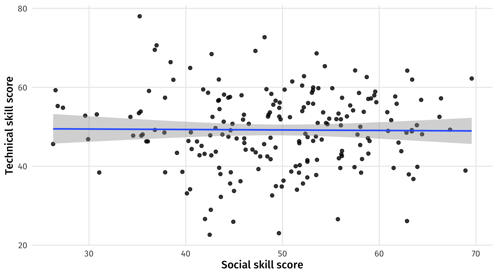If we only look at Google workers we see a trade-off between social and technical skills:
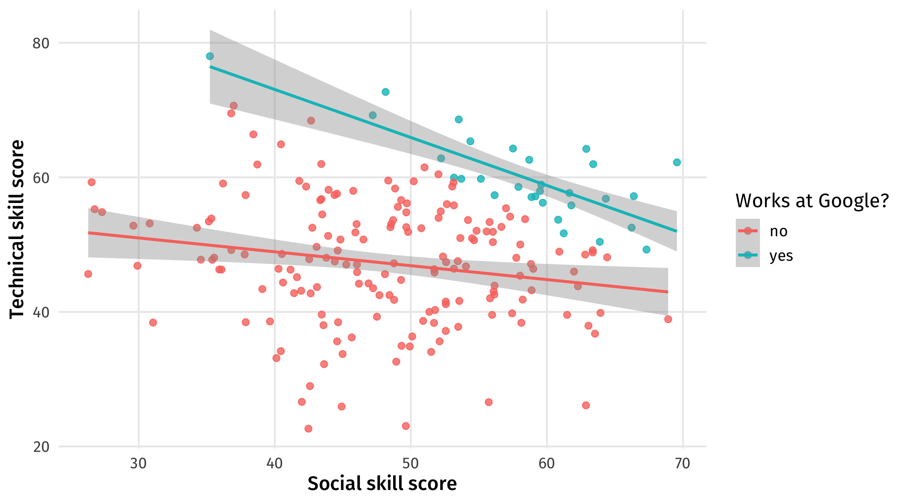It’s cool that we can control for a confound, or avoid colliders/pipes and get back the truth
But there are big limitations we must keep in mind when evaluating research:
Ability is a likely fork for the effect of Education on Earnings; but how do you measure ability?
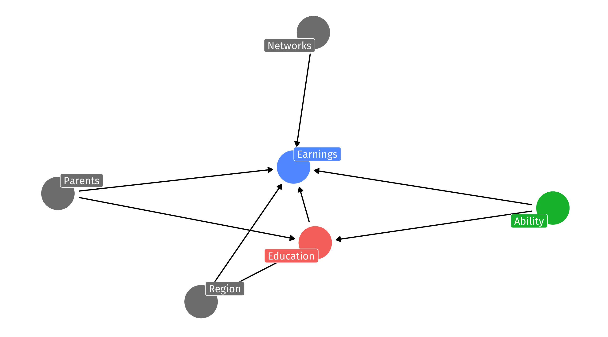Using the templates in the class script:
Make a realistic pipe scenario
Use models to show that everything goes wrong when you mistakenly control for the pipe
Make a realistic fork scenario
Use models to show that everything goes wrong when you fail to control for the fork
10:00